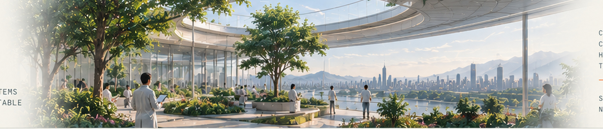
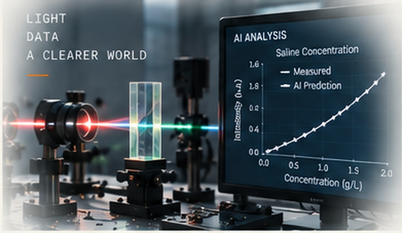
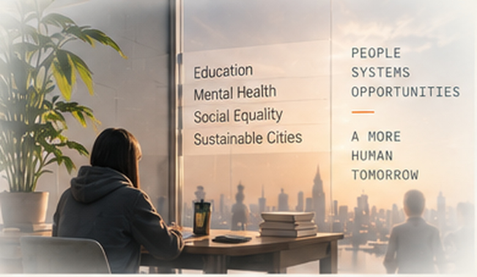
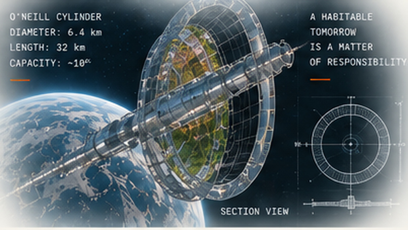
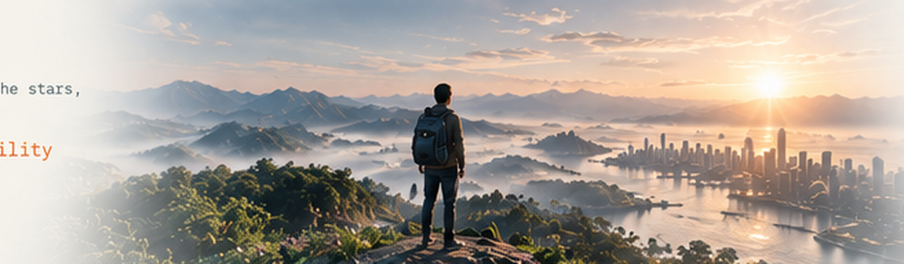

Understand what is possible.
Light, matter, forces, signals, uncertainty — the physical rules that every engineered system must obey.
NEXT / KEEP BUILDING
The settlement began as an imagined world, became a systems-design problem, and then generated research questions across physics, computing, engineering, and the human sciences.
What comes next is learning how to connect those ways of thinking more deeply — not just to make complex systems work, but to decide what they should work for.

THE PATH FORWARD
I do not see these fields as separate destinations. Each one adds a different capability to the same larger task: understanding complex systems well enough to build them responsibly.
Light, matter, forces, signals, uncertainty — the physical rules that every engineered system must obey.
Extract information from data, recognize patterns, model uncertainty, and help machines perceive changing environments.
Connect sensing, communication, control, materials, energy, and people into technologies that can actually operate.
Examine priorities, responsibility, agency, governance, and the values hidden inside technical decisions.
GUIDING PRINCIPLES
The settlement project changed the way I approach problems: not only whether an idea is technically impressive, but how it behaves inside a larger physical and human system.
Important problems rarely belong to one discipline.
Noise, failure, incomplete information, and human unpredictability are part of real systems.
Efficiency is not enough if a system reduces dignity, agency, trust, or responsibility.

01 / DEEPER SCIENCE
A physical signal becomes useful only when sensing, computation and interpretation work as one chain.
02 / HUMAN SYSTEMS
Performance is only one metric. Education, mental health, social equality and meaning belong inside the system model too.


03 / BEYOND EARTH?
I used to think the hardest question was whether we could build another world. Now I think an equally important question is what kind of world would be worth building.
A habitat is not only an engineering object; it is a claim about resources, necessity, and responsibility.

A LARGER QUESTION
Whether we study the oceans, the mind, or the stars, the same question remains: progress matters most when we are willing to ask what it is for.